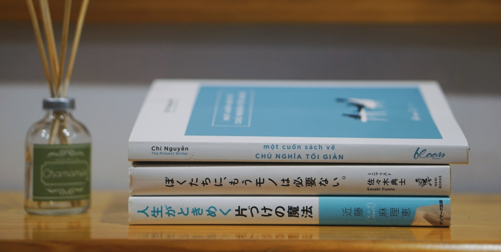

VÌ SAO MÌNH SỐNG THEO CHỦ NGHĨA TỐI GIẢN?
Cuối tuần vừa rồi, mình đã đến hiệu sách FAHASA để ngó nghiêng và mua sách. Ở đó bán rất nhiều sách, từ kinh tế, chính trị, kỹ năng sống hay lịch sử,… Nhưng rồi lúc ra về mình chỉ mua đúng một cuốn duy nhất, cuốn sách mà mình rất
muốn đọc từ […]